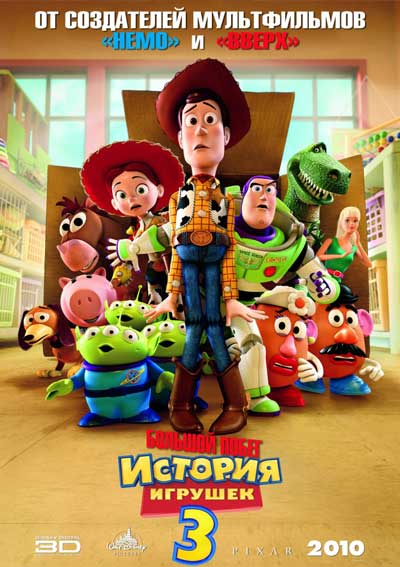
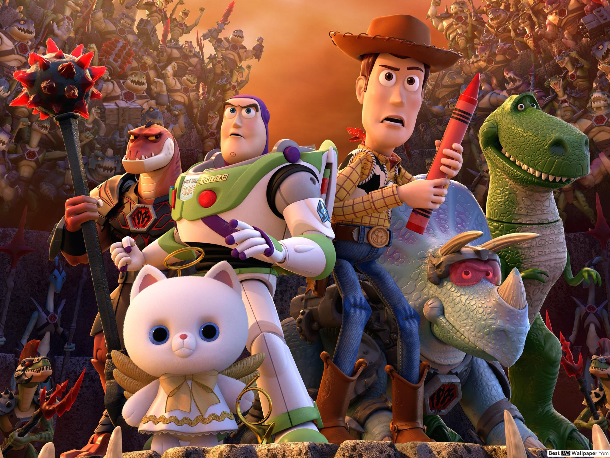

История игрушек 3 (2010)
«История игрушек: Большой побег» (англ. Toy Story 3) — американский полнометражный компьютерный мультипликационный 3D-фильм студии Pixar, сиквел мультфильма «История игрушек 2».
Повзрослевший Энди Дэвис готовится отправиться на учебу в колледж. Он планирует взять с собой шерифа Вуди, а остальные игрушки (Базза Лайтер, Булзая, Джесси, миссис и мистера Картофельные головы, Спиральку, Хэма, Рэкса и троих Пришельцев) отправить на чердак. Но происходит путаница и пакет с ними оказывается во дворе. Друзья, решив, что их собираются выбросить, сбегают и находят коробку с вещами для детского сада, куда и отправляются. Вуди, выбежав объяснить ситуацию, попадает вместе с ними. Убедившись, что у новоселов все будет в порядке, он отправляется в обратный путь, к Энди, но цепляется за дерево. Его освобождает маленькая дочь воспитательницы, Бонни, и забирает к себе домой. Там ее игрушки объясняют, какая тяжелая обстановка на самом деле в саду. Всеми жестоко управляет медведь Лотсо с помощником Мегапупсом, от которых когда-то отказались хозяева.
Тем временем Базз тоже замечает недобрые разговоры и поведение местных. И те обезвреживают его, переключив в другой режим. Лайтер забывает все и действует, будто космический полицейский. Миссис Картофельная голова наблюдает своим забытым дома глазом, что там происходит. Оказывается, Вуди был прав, никто не собирался их выбрасывать. Все хотят вернуться. К этому времени шериф пробирается обратно в садик и проводит друзей наружу.
Но Лотсо с подручными догоняет их, и в результате стычки все сваливаются в мусорный ящик. От удара Базз приходит в себя. Но выбраться не получается. На перерабатывающем заводе Пришельцы находят способ остановить конвейер, везущий бедолаг в печь. Компания возвращается домой на мусоровозе, едущем в их район. Энди радуется, увидев свои игрушки в коробке. Вуди пишет на ней адрес Бонни и будущий студент отвозит своих друзей к ней. А в садике без Лотсо стало хорошо.
СМОТРЕТЬ ТРЕЙЛЕР СМОТРЕТЬ МУЛЬТФИЛЬМ